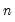
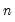

|
|
|
The @pagesmplidx function returns a vector object containing the index values for the observations in the current sample.The @pageidx(arg) function returns a vector object containing the index values for the observations in the workfile specified in arg.The @pageinidx(arg) function, where arg is a vector containing observation index values, returns a vector object, sized to match the workfile page length, that includes (0, 1) indicators for each observation, with 1’s assigned to index elements in arg, and 0’s elsewhere.If the arg contains index values that are outside of the workfile range, the function will return an error.Using @pageidx to identify observation indices and then feeding the result to @pageinidx offers a quick way of specifying a subsample of observations using dates:The @lower and @upper functions make it easy to create lower and upper triangular matrices from matrix and sym objects. The functions allow you to specify an offset from the main diagonal so you can create strict lower and upper matrices, or matrices which zero out all but small lower or upper triangular regions of the source matrix:EViews 14 also adds the @implodeu function to create a symmetric matrix from the upper triangle of a square matrix. This function complements the existing @implode which creates the sym from the lower triangle of a matrix.The new @incr function allows for adjusting all of the columns or rows of a matrix by incrementing with a vector. You may, for example, use this function to quickly add or subtract a multiple of a vector from each column of a matrix, or add or subtract a multiple of a rowvector from each row of a matrix, eliminating the need for expensive Kronecker product operations.Consider, for example the @left function which returns theleft-most characters in a string
. The first argument of the function corresponds to an alphanumeric
, and the second argument is a numeric
.
This operation uses the @dateval function to convert the initial string into a date number, the @dateadd function to find the date numbers associated with the initial date number and the following 10 weeks, and the @datestr function to convert the result back into a string.
 and
and  argument types. The command
argument types. The command paired with each of the four values of A for .
paired with each of the four values of A for .